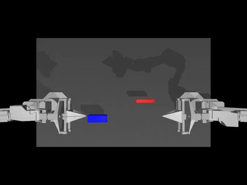

AMR V2 + SCFH
把四驱升级车和智慧鸡场窄通道场景作为主要研究载体，保留真实硬件约束。
面向端到端规划研究的 ROS2 机器人项目群
以真实 AMR 为核心，把底盘、建图、导航、场景、机械臂和数据闭环组织成一个长期演进的机器人研究工作区。
Humanities Mind, Robotics Hands
先问机器人为什么要进入一个场景，再把传感器、底盘、代码和实验闭环接起来。
这个主页把 RabbitRobot 从“作品展示”推进到“研究入口”：从真实需求出发，长期整理资料、记录实验、搭建硬件、调试 ROS2，再把问题收束到窄通道、低附着、传感器噪声下的局部规划研究。
根据 RabbitRobot 主仓库的最新 README，短期最值得收敛的是 AMR V2 / SCFH 研究平台、导航稳定化、rosbag 数据规范和第一个行为克隆模型。
把四驱升级车和智慧鸡场窄通道场景作为主要研究载体，保留真实硬件约束。
先修正 URDF、TF、里程计、EKF 和 DWB 参数，让 Nav2 / DWB 成为可靠对照组。
标准化记录 scan、odom、tf、cmd_vel、goal_pose 和 local costmap。
训练第一个从 2D LiDAR、相对目标点和当前速度到 cmd_vel 的局部规划器。
每个子项目都不是孤立的分支，而是在同一个目标下互相补位：让一个真实机器人系统逐步具备移动、建图、导航、操作、服务和展示能力。
移动机器人底盘与核心实验平台，是整个项目的主线。
手持 4D LiDAR 建图仪，为导航和规划实验提供更高质量地图。
智慧鸡场净环机器人场景，提供狭长通道和低附着测试环境。
机械臂和具身智能实验，为未来移动操作机器人做能力储备。
老人陪伴机器人概念，把底盘能力延展到室内服务和人机交互。
项目展示、技术文档、图片资料和公开入口的沉淀层。

System Thinking
AMR 承担真实运动平台，HandLiDAR 解决地图质量，SCFH 提供场景压力，Arm 扩展操作能力，ElderBuddy 把机器人拉回人的日常需求，Web 负责把过程和成果公开表达。
Research Direction
当前最值得继续推进的主线，是把 AMR V2 和 SCFH 场景整理为可复现实验平台。先把传统 Nav2 / DWB / Pure Pursuit / MPC 跑稳，再采集 scan、odom、tf、cmd_vel、goal_pose 和 local costmap 数据，训练第一个从 LiDAR 与目标到速度指令的局部规划模型。

这些版本保留了从能跑起来到能研究问题的工程路径，也让 RabbitRobot 不只是概念，而是逐步长出来的硬件和软件系统。
树莓派 5、思岚 A1、宇树 L1、DABAI DCW2、Cartographer、Nav2 和视觉感知实验。
Jetson Orin Nano Super、C50C、MID360、VLP-16、FAST-LIO2、Point-LIO2 和 Autoware 探索。
Hoverboard FOC、STM32、ST-Link、IMU 接入和底盘控制链路验证。
SolidWorks 建模与全向移动底盘探索，为更复杂场景和移动操作预留空间。
这个页面会作为算个文科生吧的公开主页，展示 RabbitRobot 全系列项目，也作为后续论文、教程、演示视频和技术笔记的入口。